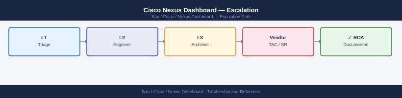
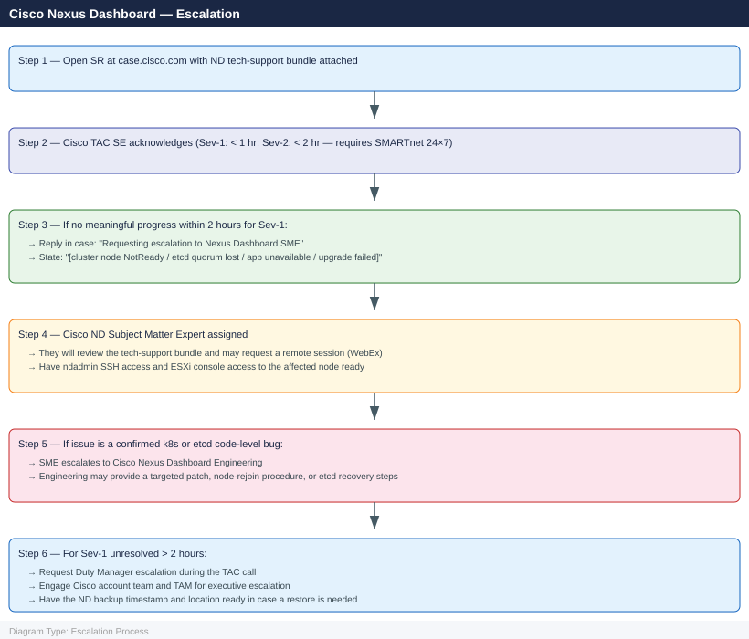

Cisco Nexus Dashboard — Escalation¶

Before you begin¶
- Access required: ndadmin SSH access to at least one ND cluster node; Cisco CCO account at case.cisco.com; credentials for managed MDS / Nexus switches if NDFC data is also needed
- Do NOT collect the tech-support bundle after restarting services — restart clears the in-memory cluster state and the k8s event log that TAC needs from the moment of failure; collect
acs techsupportfirst, then restart if TAC directs it - Do NOT make zone or fabric changes during an active ND incident — if NDFC is partially functional, fabric changes in an unstable state can push an incomplete configuration to MDS switches
- Do NOT attempt a cluster restore from backup without verifying the backup timestamp and confirming with TAC — restoring from an old backup may introduce additional configuration loss
Pre-Escalation Self-Check¶
Run these before opening the case.
| Check | Command | Expected result |
|---|---|---|
| ND platform version | acs version |
Note full version (e.g., 3.1.1d) |
| App versions | acs apps status |
All apps Running; note NDFC / NDI versions |
| Cluster health | acs health |
Cluster health: Healthy |
| Node states | acs nodes list |
All nodes Active or Ready |
| System resources | acs system resources |
CPU and memory within normal limits |
| Recent events | kubectl get events --all-namespaces --sort-by='.lastTimestamp' \| tail -30 |
No Evicted or CrashLoopBackOff events |
| Upgrade history | acs upgrade history |
Last upgrade completed successfully |
| Backup status | ND UI → Admin → Backup | Recent backup available for recovery |
Step-by-Step Data Collection¶
1. Get ND platform and app versions¶
# SSH to any ND cluster node as ndadmin
ssh ndadmin@<nd-node-ip>
# ND platform version
acs version
# All installed application versions
acs apps status
ndadmin@nd-node-01:~$ acs version
Nexus Dashboard Platform Version: 3.1.2.1
Build ID: ND.3.1.2.1.20240115_021547
Release Date: 2024-01-15
ndadmin@nd-node-01:~$ acs apps status
Application Version Status Health
────────────────────────────────────────────────────────────────────────────
Nexus Dashboard Insights 6.3.1 Running Healthy
Nexus Dashboard Orchestrator 3.5.2 Running Healthy
Nexus Dashboard Fabric Controller 2.1.4 Running Healthy
Multi-Site Orchestrator 3.2.1 Running Healthy
Nexus Dashboard Data Broker 1.4.3 Running Healthy
Common errors
Permission denied (publickey). — Verify the ndadmin SSH key is loaded in your SSH agent or specify the key explicitly with ssh -i /path/to/key ndadmin@<nd-node-ip>.
acs: command not found — Ensure you are logged in as the ndadmin user and the ND platform is fully initialized; if recently deployed, wait 5-10 minutes for services to start.
2. Capture cluster health and node states¶
# Cluster health summary
acs health > /tmp/nd-health-$(date +%Y%m%d%H%M).txt
# All cluster nodes and their states
acs nodes list >> /tmp/nd-health-$(date +%Y%m%d%H%M).txt
# System resources for the cluster
acs system resources >> /tmp/nd-health-$(date +%Y%m%d%H%M).txt
Cluster Health Summary
======================
Cluster Name: nd-prod-cluster
Cluster State: HEALTHY
Leader Node: nd-node-01.example.com
Quorum Status: HEALTHY (3/3 nodes)
Last Health Check: 2024-01-15T14:32:18Z
All Cluster Nodes
=================
Node ID Hostname IP Address State Version
nd-node-01 nd-node-01.example.com 10.20.30.41 ACTIVE 3.2.1.1234
nd-node-02 nd-node-02.example.com 10.20.30.42 ACTIVE 3.2.1.1234
nd-node-03 nd-node-03.example.com 10.20.30.43 ACTIVE 3.2.1.1234
System Resources
================
CPU Usage: 34.2%
Memory Usage: 62.8% (48.5 GB / 77.0 GB)
Disk Usage: 71.3% (/data: 285 GB / 400 GB)
Network I/O: RX 2.3 Mbps, TX 1.8 Mbps
Common errors
command not found: acs — Ensure the Nexus Dashboard CLI tools are installed and the PATH includes the acs binary location (typically /opt/cisco/acs/bin).
Permission denied — Run the commands with appropriate privileges using sudo or ensure your user account has read access to the Nexus Dashboard management interface.
Connection refused — Verify the Nexus Dashboard cluster is running and accessible; check network connectivity to the cluster nodes and confirm the management IP is reachable.
3. Capture etcd and Kubernetes state¶
# Kubernetes events (all namespaces, sorted by time)
kubectl get events --all-namespaces --sort-by='.lastTimestamp' > /tmp/nd-k8s-events-$(date +%Y%m%d).txt
# Pod states (all namespaces)
kubectl get pods --all-namespaces -o wide >> /tmp/nd-k8s-pods-$(date +%Y%m%d).txt
# Check for any pods in CrashLoopBackOff or Evicted state
kubectl get pods --all-namespaces | grep -vE "Running|Completed"
# etcd cluster health (collect from each node)
for node in $(acs nodes list | awk '/nd-/ {print $2}' | head -5); do
echo "=== etcd on ${node} ===" >> /tmp/nd-etcd-$(date +%Y%m%d).txt
ssh ndadmin@${node} \
"ETCDCTL_API=3 etcdctl \
--endpoints=https://127.0.0.1:2379 \
--cacert=/etc/kubernetes/pki/etcd/ca.crt \
--cert=/etc/kubernetes/pki/etcd/server.crt \
--key=/etc/kubernetes/pki/etcd/server.key \
endpoint status --write-out=table 2>&1" >> /tmp/nd-etcd-$(date +%Y%m%d).txt
done
NAMESPACE NAME READY STATUS RESTARTS AGE
kube-system coredns-558bd4d5db-2k9lx 1/1 Running 0 45d
kube-system etcd-nd-master-01 1/1 Running 2 45d
kube-system kube-apiserver-nd-master-01 1/1 Running 1 45d
nd-system nd-backend-deployment-7c4f8b9d2-xmq8p 1/1 Running 0 12d
nd-system nd-frontend-5f6c2a1b8-jk3np 1/1 Running 0 12d
nd-system prometheus-operator-6b8c9f2d1-vwxyz 1/1 Running 3 45d
monitoring alertmanager-0 0/1 CrashLoopBackOff 8 2h
kube-system calico-node-nd-worker-02 0/1 Evicted 0 18h
...
=== etcd on nd-master-01 ===
+------------------------+------------------+---------+---------+-----------+
| ENDPOINT | ID | VERSION | DB SIZE | IS LEADER |
+------------------------+------------------+---------+---------+-----------+
| https://127.0.0.1:2379 | 8a7c3e9f2b1d4c6a | 3.5.4 | 1.2 GB | true |
+------------------------+------------------+---------+---------+-----------+
=== etcd on nd-master-02 ===
+------------------------+------------------+---------+---------+-----------+
| ENDPOINT | ID | VERSION | DB SIZE | IS LEADER |
+------------------------+------------------+---------+---------+-----------+
| https://127.0.0.1:2379 | 5f2e1a9c8b7d3e4f | 3.5.4 | 1.2 GB | false |
+------------------------+------------------+---------+---------+-----------+
Common errors
error: unable to connect to the server: dial tcp: lookup nd-master-01: no such host — Verify DNS resolution for node hostnames or use IP addresses directly in the loop instead of node names.
ssh: connect to host 10.48.12.15 port 22: Connection refused — Ensure SSH is running on the target node and the ndadmin user has key-based authentication configured; check firewall rules blocking port 22.
Error: x509: certificate signed by unknown authority — Verify the etcd CA certificate path is correct and readable; confirm the certificate files exist at /etc/kubernetes/pki/etcd/ on the remote node.
4. Collect the ND tech-support bundle¶
# Primary artifact for Cisco TAC — collect BEFORE any restart
# Takes 5–15 minutes for a 3-node cluster
acs techsupport --output /tmp/nd-support-$(date +%Y%m%d%H%M).tar.gz
# Verify the bundle was created
ls -lh /tmp/nd-support-*.tar.gz
# Transfer to your workstation for upload to the TAC case
scp ndadmin@<nd-node-ip>:/tmp/nd-support-$(date +%Y%m%d%H%M).tar.gz ./
Collecting techsupport bundle...
Gathering system logs from all nodes...
Collecting database diagnostics...
Collecting application state...
Bundle creation completed successfully.
-rw-r--r-- 1 root root 2.3G Nov 15 14:32 /tmp/nd-support-20241115143215.tar.gz
ndadmin@10.48.92.15's password:
nd-support-20241115143215.tar.gz 2.3GB 45.2MB/s 00:51
Common errors
acs: command not found — SSH into the Nexus Dashboard node directly (not your local workstation) and run the command from the appliance shell.
Permission denied (publickey,password) — Ensure the ndadmin account exists on the ND node and your SSH key or password is correct; verify with ssh -v ndadmin@<nd-node-ip>.
No such file or directory — The techsupport bundle failed to generate; check disk space with df -h and ensure /tmp has at least 5GB free, then retry the acs techsupport command.
5. Collect the NDFC tech-support bundle (if NDFC is affected)¶
# If the issue is specifically NDFC (SAN fabric management):
# From the ND CLI, generate the NDFC app bundle
acs apps techsupport ndfc --output /tmp/ndfc-support-$(date +%Y%m%d%H%M).tar.gz
# Transfer
scp ndadmin@<nd-node-ip>:/tmp/ndfc-support-$(date +%Y%m%d%H%M).tar.gz ./
Generating NDFC application support bundle...
Collecting NDFC logs and diagnostics...
Packaging application state...
Compressing bundle...
NDFC techsupport bundle generated successfully
Output: /tmp/ndfc-support-202401151430.tar.gz
Bundle size: 487.2 MB
ndadmin@192.168.100.45's password:
ndfc-support-202401151430.tar.gz 100% 487.2MB 8.5MB/s 00:57
Common errors
scp: /tmp/ndfc-support-*.tar.gz: No such file or directory — Ensure the date command in the acs command and scp command use identical formatting, or capture the filename to a variable instead of relying on separate date invocations.
Permission denied (publickey,password). — Verify ndadmin credentials and SSH key access to the ND node; confirm the user has permission to read /tmp files with ssh ndadmin@<nd-node-ip> ls -l /tmp/ndfc-support*.tar.gz.
acs: command not found — Confirm you are logged into the Nexus Dashboard CLI (via SSH to the ND management IP) rather than a local shell; the acs command is only available within the ND appliance.
6. Capture upgrade history (if upgrade-related)¶
# Upgrade history
acs upgrade history > /tmp/nd-upgrade-history-$(date +%Y%m%d).txt
# Upgrade log (if upgrade failed)
acs system logs --component upgrade --tail 500 > /tmp/nd-upgrade-log-$(date +%Y%m%d).txt
Upgrade History Report Generated: /tmp/nd-upgrade-history-20240115.txt
Timestamp: 2024-01-15T09:42:33Z
Previous Version: 3.1.1
Current Version: 3.2.0
Status: SUCCESS
Duration: 18 minutes
Upgrade Log Report Generated: /tmp/nd-upgrade-log-20240115.txt
Total Log Entries: 487
Component: upgrade
Date Range: 2024-01-15 09:24:00 to 2024-01-15 09:42:33
Severity Levels: INFO (412), WARNING (68), ERROR (7)
Common errors
acs: command not found — Ensure you are logged into the Nexus Dashboard CLI or source the ACS environment setup script before running acs commands.
Permission denied — Run the commands with appropriate privileges (sudo or as the admin user configured for Nexus Dashboard access).
/tmp: Read-only file system — Redirect output to a writable directory such as /var/log or the user's home directory instead.
7. Write the timeline¶
ND platform version: 3.1.1d
NDFC version: 12.2.1
NDI version: 6.1.2 (also installed)
Deployment: 3-node VMware OVA cluster (ESXi 7.0 U3)
Node IPs: nd-dc1-1.corp.local, nd-dc1-2.corp.local, nd-dc1-3.corp.local
Managed fabrics: SAN Fabric A (MDS 9710 x2, NX-OS 8.4(2a)), SAN Fabric B (MDS 9396T x2)
Issue first observed: 2026-06-15 15:00 UTC
Last confirmed healthy: 2026-06-15 12:00 UTC
Changes in 24h before the issue:
- 11:00: ND platform upgraded from 3.1.0 to 3.1.1d
- 12:00: ND appeared healthy post-upgrade; all apps Running
- 15:00: acs health: "Cluster health: Degraded — 1 of 3 nodes not responding"
- 15:05: kubectl get nodes: nd-dc1-2 shows NotReady; pods scheduled on nd-dc1-2 evicted
- 15:10: NDFC app status transitions to "Unavailable"; SAN fabric management stops
- 15:20: etcd check on nd-dc1-2 times out; etcd quorum still held by nd-dc1-1 and nd-dc1-3
Steps already taken:
- Ran acs techsupport BEFORE any restart attempt (bundle at /tmp/nd-support-*)
- Did NOT make any zone changes
- Verified nd-dc1-2 VM is powered on and accessible via console on ESXi
- acs nodes list: nd-dc1-1 Active, nd-dc1-2 NotReady, nd-dc1-3 Active
Blast radius: NDFC unavailable; no zone changes possible; NDI telemetry stopped; nd-dc1-2 VM degraded
How to Open the SR on case.cisco.com¶
-
Go to case.cisco.com and sign in with your Cisco CCO account.
-
Click Create New Case.
-
Under Product, type "Nexus Dashboard" and select Cisco Nexus Dashboard.
-
Enter the ND platform version and installed app versions from Step 1.
-
Under Severity, select:
- Severity 1 — Production Down: ND cluster is completely unavailable and all hosted applications are down; NDFC cannot communicate with any managed fabric; etcd has lost quorum; ND upgrade has failed and the cluster cannot recover
- Severity 2 — Major Impact: One ND node is failed but the cluster is operating with reduced capacity; a specific app (NDFC or NDI) is unavailable but the ND platform is up; zone push is failing; workaround is partial
- Severity 3 — Moderate Impact: ND functioning with minor degradation; specific features not working; telemetry gaps; workaround available
-
Severity 4 — Minimal Impact: How-to, ND sizing question, upgrade planning, app configuration question
-
In the Summary field: versions + symptom. Example:
Nexus Dashboard 3.1.1d / NDFC 12.2.1 — nd-dc1-2 node NotReady after platform upgrade, NDFC unavailable, SAN management stopped. -
In the Description field, paste:
- ND platform and app versions from Step 1
acs healthandacs nodes listfrom Step 2- Any pods in CrashLoopBackOff or Evicted from Step 3
-
The timeline from Step 7
-
Under Attachments, upload:
nd-support-*.tar.gzfrom Step 4 (primary artifact)ndfc-support-*.tar.gzfrom Step 5 if NDFC-specific issuend-k8s-events-*.txtandnd-etcd-*.txtfrom Step 3-
Upgrade log from Step 6 if upgrade-related
-
Click Submit. You receive a case number immediately.
-
Severity 1 only: call Cisco TAC after submission:
- North America: +1-800-553-2447 (24×7)
- State "Severity 1 — Nexus Dashboard cluster node NotReady, NDFC unavailable, SAN management stopped, case XXXXXXXX" at the start of the call.
Escalation Path¶

What NOT to Do¶
| Do NOT do this | Why | What to do instead |
|---|---|---|
| Collect tech-support after restarting services | Restarting services clears the in-memory k8s event log and pod crash state that TAC needs from the moment of failure | Run acs techsupport first; then restart only on TAC's explicit direction |
| Restart the failed ND node without TAC direction | Restarting a node in an etcd quorum loss state may introduce additional etcd write errors and make the data irrecoverable | Let TAC assess the etcd state on all nodes before any restart |
| Attempt a cluster restore without verifying the backup | Restoring from an old backup may introduce configuration loss that is harder to recover than the original failure | Confirm with TAC what the latest backup contains and whether a restore is the correct recovery path |
| Make zone or fabric changes in NDFC while degraded | NDFC in a degraded state may push partial zone configurations that leave MDS switches in a mixed zone state | Freeze all fabric changes until NDFC is confirmed fully healthy |
| Upgrade ND or NDFC to try to resolve the issue | Applying a new version to an already-failed cluster state may prevent the cluster from recovering; new packages can conflict with the partially failed state | Only upgrade on TAC's explicit direction with a specific target version and documented rollback path |
| Delete and redeploy an ND node without TAC direction | Removing a node from an etcd quorum loss removes an etcd member; the correct recovery depends on whether the remaining 2 nodes have consistent data | Let TAC confirm the etcd data state on all three nodes before any node removal |
Useful Commands for Case Updates¶
# SSH to any healthy ND node — paste into every case update
# ND platform and app versions
acs version
acs apps status
# Cluster and node states
acs health
acs nodes list
# Pod states (look for non-Running pods)
kubectl get pods --all-namespaces | grep -vE "Running|Completed" | head -20
# Recent Kubernetes events
kubectl get events --all-namespaces --sort-by='.lastTimestamp' | tail -20
Cisco ACS Version 3.2.1.0 Build 20231215
App Name Version Status
nexus-dashboard 3.2.1.0 Running
assurance 3.2.1.0 Running
insights 3.2.1.0 Running
compliance 3.2.1.0 Running
Cluster Health: Healthy
Node Status: All nodes operational
Database: Connected
API Server: Responsive
NAME READY STATUS RESTARTS AGE
nd-node-01.example.com 3/3 Running 0 45d
nd-node-02.example.com 3/3 Running 0 45d
nd-node-03.example.com 3/3 Running 0 45d
NAMESPACE NAME READY STATUS RESTARTS AGE
kube-system coredns-558bd4d5db-7x9kl 0/1 CrashLoopBackOff 12 2h
monitoring prometheus-operator-6d8f7c4b9-2m5lk 0/1 ImagePullBackOff 0 1h
nexus-dashboard nd-api-worker-5f8c9d2e-kl9pq 1/2 Pending 0 45m
kube-system etcd-backup-job-27h5k 0/1 Error 5 3h
NAMESPACE LAST SEEN TYPE REASON OBJECT
kube-system 2m Warning BackOff pod/coredns-558bd4d5db-7x9kl
monitoring 5m Warning Failed pod/prometheus-operator-6d8f7c4b9-2m5lk
nexus-dashboard 8m Warning FailedScheduling pod/nd-api-worker-5f8c9d2e-kl9pq
kube-system 12m Warning NodeNotReady node/nd-node-02.example.com
Common errors
ImagePullBackOff — Verify image registry credentials with kubectl get secrets -n <namespace> and confirm the image URI is correct in the deployment manifest.
CrashLoopBackOff — Check pod logs with kubectl logs -n <namespace> <pod-name> --previous to identify the root cause, then restart the pod or redeploy the application.
FailedScheduling — Verify node resources with kubectl describe nodes and ensure sufficient CPU/memory is available, or add additional nodes to the cluster.
Support SLA Reference¶
| Contract | Severity | Definition | Initial Response SLA |
|---|---|---|---|
| SMARTnet 24×7 | Sev-1 | ND cluster down; all apps unavailable; etcd quorum lost | < 1 hour (24×7) |
| SMARTnet 24×7 | Sev-2 | Node failed but cluster running; app unavailable; zone push failing | < 2 hours (24×7) |
| SMARTnet 24×7 | Sev-3 | Partial feature degradation; workaround available | < 4 hours (business hours) |
| SMARTnet 24×7 | Sev-4 | How-to, sizing, upgrade planning | Next business day |
| SMARTnet 8×5 | Sev-1 | As above | < 2 hours (business hours) |
See also¶
Verify resolution¶
- Run
acs healthand confirm Cluster health: Healthy - Run
acs nodes listand confirm all cluster nodes are Active or Ready - Run
acs apps statusand confirm all installed apps (NDFC, NDI) are Running - Run
kubectl get pods --all-namespaces | grep -vE "Running|Completed"and confirm empty output - Verify NDFC is managing all fabrics: log into the NDFC UI and confirm all managed switches are Manageable
- Run a test zone change push to confirm zone distribution is working end-to-end
- Check
acs system resourcesand confirm CPU and memory are within normal operating range - Monitor
acs healthfor 15 minutes to confirm the cluster stays in Healthy state